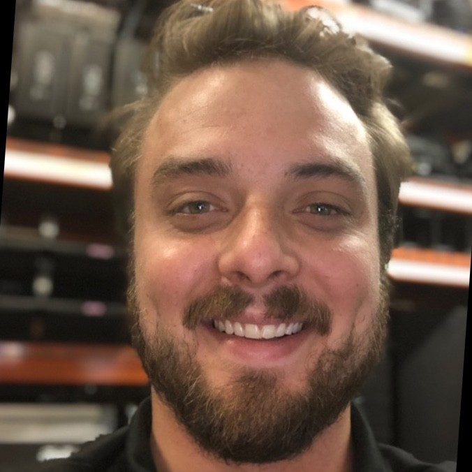

Jacob Lingo
Computer Engineering
As a senior Computer Engineering student at the University of Central Florida with a strong background in hardware security research and industrial internships, I am seeking a dynamic opportunity where I can leverage my technical acumen, creative problem-solving abilities, and passion for learning to contribute effectively to innovative projects in the field.

Here, you'll find a comprehensive overview of my professional experience and projects in the field of computer engineering. With a strong foundation in both hardware and software development, I've had the privilege of contributing to various cutting-edge projects and teams. Below, you'll discover details about my roles, responsibilities, and key accomplishments, providing insights into my skills, expertise, and passion for innovation.